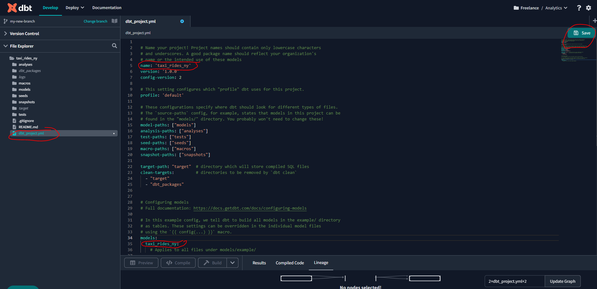

09:09:43 Began running node model.taxi_rides_ny.stg_green_tripdata
09:09:43 1 of 1 START sql view model dbt_stephen_barrie.stg_green_tripdata .............. [RUN]
09:09:43 Acquiring new bigquery connection 'model.taxi_rides_ny.stg_green_tripdata'
09:09:43 Began compiling node model.taxi_rides_ny.stg_green_tripdata
09:09:43 Writing injected SQL for node "model.taxi_rides_ny.stg_green_tripdata"
09:09:43 Timing info for model.taxi_rides_ny.stg_green_tripdata (compile): 2023-03-27 09:09:43.922045 => 2023-03-27 09:09:43.940627
09:09:43 Began executing node model.taxi_rides_ny.stg_green_tripdata
09:09:43 Writing runtime sql for node "model.taxi_rides_ny.stg_green_tripdata"
09:09:43 Opening a new connection, currently in state closed
09:09:43 On model.taxi_rides_ny.stg_green_tripdata: /* {"app": "dbt", "dbt_version": "1.4.5", "profile_name": "user", "target_name": "default", "node_id": "model.taxi_rides_ny.stg_green_tripdata"} */
create or replace view `taxi-rides-ny-137`.`dbt_stephen_barrie`.`stg_green_tripdata`
OPTIONS()
as
select
-- identifiers
cast(vendorid as integer) as vendorid,
cast(ratecodeid as integer) as ratecodeid,
cast(pulocationid as integer) as pickup_locationid,
cast(dolocationid as integer) as dropoff_locationid,
-- timestamps
cast(lpep_pickup_datetime as timestamp) as pickup_datetime,
cast(lpep_dropoff_datetime as timestamp) as dropoff_datetime,
-- trip info
store_and_fwd_flag,
cast(passenger_count as integer) as passenger_count,
cast(trip_distance as numeric) as trip_distance,
cast(trip_type as integer) as trip_type,
-- payment info
cast(fare_amount as numeric) as fare_amount,
cast(extra as numeric) as extra,
cast(mta_tax as numeric) as mta_tax,
cast(tip_amount as numeric) as tip_amount,
cast(tolls_amount as numeric) as tolls_amount,
cast(ehail_fee as numeric) as ehail_fee,
cast(improvement_surcharge as numeric) as improvement_surcharge,
cast(total_amount as numeric) as total_amount,
cast(payment_type as integer) as payment_type,
case payment_type
when 1 then 'Credit card'
when 2 then 'Cash'
when 3 then 'No charge'
when 4 then 'Dispute'
when 5 then 'Unknown'
when 6 then 'Voided trip'
end as payment_type_description,
cast(congestion_surcharge as numeric) as congestion_surcharge
from `taxi-rides-ny-137`.`trips_data_all`.`green_tripdata`
limit 100;
09:09:44 BigQuery adapter: https://console.cloud.google.com/bigquery?project=taxi-rides-ny-137&j=bq:europe-central2:8ca3c78e-ccc7-4992-95bd-bcdb0df40f4e&page=queryresults
09:09:45 Timing info for model.taxi_rides_ny.stg_green_tripdata (execute): 2023-03-27 09:09:43.941082 => 2023-03-27 09:09:45.000530
09:09:45 Sending event: {'category': 'dbt', 'action': 'run_model', 'label': '40e82f39-51cb-4467-afa1-3237172c4c5d', 'context': [<snowplow_tracker.self_describing_json.SelfDescribingJson object at 0x7fb6833835e0>]}
09:09:45 1 of 1 OK created sql view model dbt_stephen_barrie.stg_green_tripdata ......... [[32mCREATE VIEW (0 processed)[0m in 1.08s]
09:09:45 Finished running node model.taxi_rides_ny.stg_green_tripdataWeek 4 - Analytics Engineering
Goal: Transforming the data previously loaded in to our data warehouse (in my case BigQuery) by building models using a dbt project, testing and deploying those models in a production environment, before finally visualizing the data in Looker.
Note that I have already ingested the prerequisite datasets to Google Cloud Storage using the Prefect work orchestration solution, and have created the following external tables in BigQuery:
Yellow trip data (109,047,518 rows)

fhv trip data (43,244,696)

Green trip data (7,778,101 rows)

4.1.1 Analytics Engineering Basics
What is Analytics Engineering ?
Data Modeling Concepts


4.1.2 What is dbt ?
How to set up dbt for using BigQuery
Create a BigQuery service account
In order to connect we need the service account JSON file generated from bigquery:
- Open the BigQuery credential wizard to create a service account in your taxi project


- You can either grant the specific roles the account will need or simply use bq admin, as you’ll be the sole user of both accounts and data.
Note: if you decide to use specific roles instead of BQ Admin, some users reported that they needed to add also viewer role to avoid encountering denied access errors

- Now that the service account has been created we need to add and download a JSON key, go to the keys section, navigate to
ADD KEYthen selectCreate new keyfrom the dropdown. Select key type JSON and once you click on create it will get inmediately downloaded for you to use.

Create a dbt cloud project
- Create a dbt cloud account from their website (free for solo developers)
- Once you have logged in into dbt cloud you will be prompt to create a new project
We are going to need:
- access to our data warehouse (BigQuery - set up in weeks 2 and 3)
- admin access to our repo, where we will have the dbt project
Name our project
Choose Bigquery as our data warehouse:
- Upload the key you downloaded from BQ on the create from file option. This will fill out most fields related to the production credentials. Scroll down to the end of the page and set up your development credentials.


Add GitHub repository
Note: This step could be skipped by using a managed repository if you don’t have your own GitHub repo for the course.
- Select git clone and paste the SSH key from your repo.
- You will get a deploy key, head to your GH repo and go to the settings tab. Under security you’ll find the menu deploy keys. Click on
Add deploy keyand paste the deploy key provided by dbt cloud. Make sure to tick on “write access”.
Review your project settings
At the end, if you go to your projects it should look some like this:

4.2.1 Start Your dbt Project: BigQuery and dbt Cloud
You’ll notice after initializing your project that the main branch will be read-only. This is because any changes to code cannot and should not be made directly in the base branch. A new branch must be created in the dbt Cloud IDE in order to make any changes to your project.
You can perform git tasks (such as create a new branch) with the Commit and Sync button. Once you commit the initial “changes” even though you haven’t made any changes because it’s read only! you can then create a new branch from the same place, and make edits within that branch.
Once you have created the new branch - edit the dbt_project_yaml to as per below and save the file:

4.3.1 Build the First dbt Models
Anatomy of a dbt model: written code vs compiled sources
Sources, seeds and ref

Let’s now go back to our dbt IDE and create two new directories for the models we will be creating:
The first directory Staging will be used for our raw data. Let’s create a schema.yml file to use the source macro to resolve the correct schema, build the correct dependencies, and generate the lineage automatically:
Now let’s create a sql file :
We can run this model using one of the following commands within the dbt terminal:
dbt run # Builds models in your target database.
dbt run -m stg_green_tripdata.sql
dbt run --select stg_green_tripdata # Builds a specific model.
dbt run --select stg_green_tripdata+ # Builds a specific model and its children.
dbt run --select +stg_green_tripdata # Builds a specific model and its ancestors.
dbt run --select +stg_green_tripdata+ # Builds a specific model and its children and ancestors.Let’s go with :
dbt run -m stg_green_tripdata.sqlI ran into an error because of inconsistent regions. The data buckets and BigQuery tables have to be configured to the same region. I reconfigured my staging table to Central Europe 2 to be consistent with my data bucket and the model ran successfully!
If we now head to BigQuery we can see that our sql table has been created :
Macros
Macros in Jinja are pieces of code that can be reused multiple times – they are analogous to “functions” in other programming languages, and are extremely useful if you find yourself repeating code across multiple models. Macros are defined in .sql files, typically in your macros directory (docs).
Let’s now create a macros file for our project :
And let’s add that macro to our stg_green_tripdata.sql file :
And run the model once again using the following command within the dbt terminal:
dbt run --select stg_green_tripdata We can also see the compiled code:
Packages
dbt packages are essentially standalone dbt projects, with models and macros that tackle a specific problem area. As a dbt user, by adding a package to our project, the package’s models and macros will become part of our own project.
Let’s create a packages.yaml file to include the following :
To install this package and download the dependencies run the following command in the dbt terminal:
dbt deps A number of folders and files have now been created:
Let’s return to our model and update our stg_green_tripdata.sql file to make use of a macro:
Now let’s run the command from the dbt IDE :
dbt run --select stg_green_tripdataAnd we can see the compiled code extract:
Variables
dbt provides a mechanism, variables, to provide data to models for compilation. Variables can be used to configure timezones, avoid hardcoding table names or otherwise provide data to models to configure how they are compiled.
See Project variables for further details.
Let’s now introduce the above is_test_run variable into our stg_green_tripdata.sql file which will allow us to control from the command line whether we execute a test_run with a limit of 100 rows, or a full run, with no limit:
And run the model from the IDE first, without specifying our variable function, and so the run will default to True and the limit of 100 rows will be applied :
dbt run --select stg_green_tripdataBut if we run again, this time specifying our variable as False then the 100 row limit will not be applied :
dbt run --select stg_green_tripdata --var 'is_test_run: false'We can see from our Big Query table that we now have 6,835,902 rows :
OK, now that we have built our green_tripdata model let’s replicate these steps for our yellow_tripdata :
Now use dbt run because we have two models:
dbt run --var 'is_test_run: false'And if we check Big Query we can see our stg_yellow_tripdata table has been added with `107,991,349 rows:
dbt Seeds
Seeds are CSV files in your dbt project (typically in your seeds directory), that dbt can load into your data warehouse using the dbt seed command. Typically these are small files that contain data that will not chnage that often. See Seeds for further detail.
Let’s add the taxi zone look up csv file by creating a new file within the seeds directory and simply copying and pasitng the contents of the raw csv file:
and then run the following command from the dbt terminal:
dbt seedAnd head back to BigQuery and we find our table created with 265 rows :

We can specify the data types of the csv fil, by modifying our dbt_project.yml file - otherwise default types will be applied :
If we slightly modify data(for example, change 1,“EWR”,“Newark Airport”,“EWR” to 1,“NEWR”,“Newark Airport”,“NEWR”) in the csv file, and then run the following command:
dbt seed --full-refreshLet’s now create a model from this seed. First, create a new file within the core directory called dim_zones.sql :

Ideally, we want everything in the directory to be tables to have efficient queries.
Now, create the model fact_trips.sql within the core directory :
And we can have this nice visualization of the lineage :
The dbt run command will create everything, except the seeds:
I ran into an error and after quite a bit of head scratching, it arose because the order of my columns was not consistent between my yellow and green tables. The following are basic rules for combining the result sets of two queries by using UNION:
- The number and the order of the columns must be the same in all queries.
- The data types must be compatible.
After synchronizing the column order it ran successfully:
And I now have my fact_trips table in BQ:
However we also want to run the seeds, so we will use the command dbt build --select fact_trips to run only the fact_trips model :
The command dbt build --select +fact_trips --var 'is_test_run: false' will run everything that fact_trips needs. dbt already knows the dependencies :

And we can see in BQ that our fact_trips table now has 113,324,889 rows :
4.3.2 Testing and Documenting the Project
Tests are assertions you make about your models and other resources in your dbt project (e.g. sources, seeds and snapshots). When you run dbt test, dbt will tell you if each test in your project passes or fails.
See Tests for further details.
Documentation
For further detail about documentation see here.
Deploying a dbt project
Let’s create a dm_monthly_zone_revenue.sql file :
Then build the table and its dependencies using:
dbt build --select +dm_monthly_zone_revenue --var 'is_test_run: false'And we can see that we now have the table in BQ :
Then, we update the `schema.yml` file in `models/staging` to define the model. This section is used in particular to document the model and to add tests:models/staging/schema.yml
version: 2
sources:
- name: staging
#For bigquery:
database: taxi-rides-ny-137
# For postgres:
# database: production
schema: trips_data_all
# loaded_at_field: record_loaded_at
tables:
- name: green_tripdata
- name: yellow_tripdata
# freshness:
# error_after: {count: 6, period: hour}
models:
- name: stg_green_tripdata
description: >
Trip made by green taxis, also known as boro taxis and street-hail liveries.
Green taxis may respond to street hails,but only in the areas indicated in green on the
map (i.e. above W 110 St/E 96th St in Manhattan and in the boroughs).
The records were collected and provided to the NYC Taxi and Limousine Commission (TLC) by
technology service providers.
columns:
- name: tripid
description: Primary key for this table, generated with a concatenation of vendorid+pickup_datetime
tests: # severity = warn = warning given but program run continues | severity = never = IMMEDIATE stop
- unique:
severity: warn
- not_null:
severity: warn
- name: VendorID
description: >
A code indicating the TPEP provider that provided the record.
1= Creative Mobile Technologies, LLC;
2= VeriFone Inc.
- name: pickup_datetime
description: The date and time when the meter was engaged.
- name: dropoff_datetime
description: The date and time when the meter was disengaged.
- name: Passenger_count
description: The number of passengers in the vehicle. This is a driver-entered value.
- name: Trip_distance
description: The elapsed trip distance in miles reported by the taximeter.
- name: Pickup_locationid
description: locationid where the meter was engaged.
tests: # severity = warn = warning given but program run continues | severity = never = IMMEDIATE stop
- relationships:
to: ref('taxi_zone_lookup')
field: locationid
severity: warn
- name: dropoff_locationid
description: locationid where the meter was engaged.
tests: # severity = warn = warning given but program run continues | severity = never = IMMEDIATE stop
- relationships:
to: ref('taxi_zone_lookup')
field: locationid
- name: RateCodeID
description: >
The final rate code in effect at the end of the trip.
1= Standard rate
2=JFK
3=Newark
4=Nassau or Westchester
5=Negotiated fare
6=Group ride
- name: Store_and_fwd_flag
description: >
This flag indicates whether the trip record was held in vehicle
memory before sending to the vendor, aka “store and forward,”
because the vehicle did not have a connection to the server.
Y= store and forward trip
N= not a store and forward trip
- name: Dropoff_longitude
description: Longitude where the meter was disengaged.
- name: Dropoff_latitude
description: Latitude where the meter was disengaged.
- name: Payment_type
description: >
A numeric code signifying how the passenger paid for the trip.
tests: # severity = warn = warning given but program run continues | severity = never = IMMEDIATE stop
- accepted_values:
values: "{{ var('payment_type_values') }}"
severity: warn
quote: false
- name: payment_type_description
description: Description of the payment_type code
- name: Fare_amount
description: >
The time-and-distance fare calculated by the meter.
Extra Miscellaneous extras and surcharges. Currently, this only includes
the $0.50 and $1 rush hour and overnight charges.
MTA_tax $0.50 MTA tax that is automatically triggered based on the metered
rate in use.
- name: Improvement_surcharge
description: >
$0.30 improvement surcharge assessed trips at the flag drop. The
improvement surcharge began being levied in 2015.
- name: Tip_amount
description: >
Tip amount. This field is automatically populated for credit card
tips. Cash tips are not included.
- name: Tolls_amount
description: Total amount of all tolls paid in trip.
- name: Total_amount
description: The total amount charged to passengers. Does not include cash tips.
- name: stg_yellow_tripdata
description: >
Trips made by New York City's iconic yellow taxis.
Yellow taxis are the only vehicles permitted to respond to a street hail from a passenger in all five
boroughs. They may also be hailed using an e-hail app like Curb or Arro.
The records were collected and provided to the NYC Taxi and Limousine Commission (TLC) by
technology service providers.
columns:
- name: tripid
description: Primary key for this table, generated with a concatenation of vendorid+pickup_datetime
tests: # severity = warn = warning given but program run continues | severity = never = IMMEDIATE stop
- unique:
severity: warn
- not_null:
severity: warn
- name: VendorID
description: >
A code indicating the TPEP provider that provided the record.
1= Creative Mobile Technologies, LLC;
2= VeriFone Inc.
- name: pickup_datetime
description: The date and time when the meter was engaged.
- name: dropoff_datetime
description: The date and time when the meter was disengaged.
- name: Passenger_count
description: The number of passengers in the vehicle. This is a driver-entered value.
- name: Trip_distance
description: The elapsed trip distance in miles reported by the taximeter.
- name: Pickup_locationid
description: locationid where the meter was engaged.
tests: # severity = warn = warning given but program run continues | severity = never = IMMEDIATE stop
- relationships:
to: ref('taxi_zone_lookup')
field: locationid
severity: warn
- name: dropoff_locationid
description: locationid where the meter was engaged.
tests: # severity = warn = warning given but program run continues | severity = never = IMMEDIATE stop
- relationships:
to: ref('taxi_zone_lookup')
field: locationid
severity: warn
- name: RateCodeID
description: >
The final rate code in effect at the end of the trip.
1= Standard rate
2=JFK
3=Newark
4=Nassau or Westchester
5=Negotiated fare
6=Group ride
- name: Store_and_fwd_flag
description: >
This flag indicates whether the trip record was held in vehicle
memory before sending to the vendor, aka “store and forward,”
because the vehicle did not have a connection to the server.
Y= store and forward trip
N= not a store and forward trip
- name: Dropoff_longitude
description: Longitude where the meter was disengaged.
- name: Dropoff_latitude
description: Latitude where the meter was disengaged.
- name: Payment_type
description: >
A numeric code signifying how the passenger paid for the trip.
tests: # severity = warn = warning given but program run continues | severity = never = IMMEDIATE stop
- accepted_values:
values: "{{ var('payment_type_values') }}"
severity: warn
quote: false
- name: payment_type_description
description: Description of the payment_type code
- name: Fare_amount
description: >
The time-and-distance fare calculated by the meter.
Extra Miscellaneous extras and surcharges. Currently, this only includes
the $0.50 and $1 rush hour and overnight charges.
MTA_tax $0.50 MTA tax that is automatically triggered based on the metered
rate in use.
- name: Improvement_surcharge
description: >
$0.30 improvement surcharge assessed trips at the flag drop. The
improvement surcharge began being levied in 2015.
- name: Tip_amount
description: >
Tip amount. This field is automatically populated for credit card
tips. Cash tips are not included.
- name: Tolls_amount
description: Total amount of all tolls paid in trip.
- name: Total_amount
description: The total amount charged to passengers. Does not include cash tips. Next, we modify the dbt_project.yml to define the payment_type_values variable :
dbt.project/yml
# Name your project! Project names should contain only lowercase characters
# and underscores. A good package name should reflect your organization's
# name or the intended use of these models
name: 'taxi_rides_ny'
version: '1.0.0'
config-version: 2
# This setting configures which "profile" dbt uses for this project.
profile: 'pg-dbt-workshop'
# These configurations specify where dbt should look for different types of files.
# The `source-paths` config, for example, states that models in this project can be
# found in the "models/" directory. You probably won't need to change these!
model-paths: ["models"]
analysis-paths: ["analysis"]
test-paths: ["tests"]
seed-paths: ["seeds"]
macro-paths: ["macros"]
snapshot-paths: ["snapshots"]
target-path: "target" # directory which will store compiled SQL files
clean-targets: # directories to be removed by `dbt clean`
- "target"
- "dbt_packages"
- "dbt_modules"
# Configuring models
# Full documentation: https://docs.getdbt.com/docs/configuring-models
# In this example config, we tell dbt to build all models in the example/ directory
# as tables. These settings can be overridden in the individual model files
# using the `{{ config(...) }}` macro.
models:
taxi_rides_ny:
# Applies to all files under models/.../
staging:
materialized: view
core:
materialized: table
vars:
payment_type_values: [1, 2, 3, 4, 5, 6]
seeds:
taxi_rides_ny:
taxi_zone_lookup:
+column_types:
locationid: numericThen, we can run dbt test or one of the following commands:
dbt test # Run tests on data in deployed models.
dbt test --select stg_green_tripdata # Run tests on data in specified model.
dbt test --select stg_green_tripdata+ # Run tests on data in specified model and its children.
dbt test --select +stg_green_tripdata # Run tests on data in specified model and its ancestors.
dbt build # Run the seeds, run the tests and run the models.Let’s use dbt test :
We see that the column tripid from the stg_green_tripdata table is not unique after all. So let’s update our sql files - to keep only the first row of duplicates, with the condition where rn = 1 - rn means row number
For further detail on duplicates, see 4 Ways to Check for Duplicate Rows in SQL Server.
Let’s now run everything we have built so far with dbt build :
As we can see, this time, all tests have passed.
The final thing to do is to complete our project is to add a schema.yml file for our core models :
version: 2
models:
- name: dim_zones
description: >
List of unique zones idefied by locationid.
Includes the service zone they correspond to (Green or yellow).
- name: fact_trips
description: >
Taxi trips corresponding to both service zones (Green and yellow).
The table contains records where both pickup and dropoff locations are valid and known zones.
Each record corresponds to a trip uniquely identified by tripid.
- name: dm_monthly_zone_revenue
description: >
Aggregated table of all taxi trips corresponding to both service zones (Green and yellow) per pickup zone, month and service.
The table contains monthly sums of the fare elements used to calculate the monthly revenue.
The table contains also monthly indicators like number of trips, and average trip distance.
columns:
- name: revenue_monthly_total_amount
description: Monthly sum of the the total_amount of the fare charged for the trip per pickup zone, month and service.
tests:
- not_null:
severity: errorand a macros_properties.yml file for completeness :
version: 2
macros:
- name: get_payment_type_description
description: >
This macro receives a payment_type and returns the corresponding description.
arguments:
- name: payment_type
type: int
description: >
payment_type value.
Must be one of the accepted values, otherwise the macro will return nullSee Tests and Configuring test severity for more information about tests.
4.4.1 Deployment Using dbt Cloud
Now that we have created a complete project, and tested it, and know that everything runs error-free it is time to deploy our project using version control and CI/CD in a production environment.
Continuous Integration (CI)
For further detail on enabling CI in dbt Cloud see the documentation.
Creating a Production environment
In dbt cloud, commit my-new-branch and pull request. Then in our GitHub repository taxi_rides_ny, merge this pull request to our main branch.
Now head back to the dbt IDE. We already have a development environment :
But let’s now create a production environment :
And now let’s create a Job :
Note that in order to have access to Webhooks you need to have either a Team or Enterprise subscription.
Let’s now run the job :
Under Artifacts we can see the compiled code together with the manifest :
and the documentation :
We can also see the Lineage Graph for our models :
Let’s head back to the dbt cloud IDE and account settings and within Artifacts link the documentation to our dbt build :
Now that we have now successfully transformed our data using dbt models and tested and deployed those models, the final step is to visualize our data.
4.5.1 Visualising the data with Looker (f.k.a Google Data Studio)
Now that we have successfully transformed our data using dbt, it is time to visualise that data. Let’s first take a look at Looker formerly known as Google Data Studio, an online tool for converting data into customizable informative reports and dashboards introduced by Google on March 15, 2016 as part of the enterprise Google Analytics 360 suite.
In May 2016, Google announced a free version of Data Studio for individuals and small teams. See https://en.wikipedia.org/wiki/Looker_Studio.
Go to Looker Studio and click USE IT FOR FREE. Make sure you are signed in to the correct Google account. The first thing we need to do is create a data source. There are 23 different connectors at the time of writing. We will be using BigQuery :
We will be working with the table fact_trips table of our taxi-rides-ny project created in our dbt production environment :
After connecting we are taken to the main dashboard. Although dimensions and facts should be familiar terms to those with knowledge of dimensional modeling the name fact_trips can be changed to something that is more palatable for other stakeholders.
We can see all 27 columns and their data types. Default aggregation is applied on some, but these can and should be removed where this is not appropriate, e.g. categorical data. Columns can be added from here. Descriptions can also be added to provide useful information for other users of the data.
Note at the top there is a Data Freshness tab - the default setting is 12 hours but can be changed.
At the bottom there is a default Metric named Record Count which is useful - others can be added from here.
After modifying the default aggregations go ahead and create a report :
Let’s choose a time series chart to begin with :
We can see right away that the date range is 2001 to 2082! This is because we didn’t filter the data and we have some outliers. We can define our date range by using Add a control from the dropdown, and dragging the filter above our chart.
There is a wide variety of visualizations available to us. For illustrative purposes we will :
- create a scorecard for
Total trips recorded - create a pie chart for
Service type distribution - create a table with a heatmap for
Trips per pickup zone - create a stacked column chart for
Trips per month and year. We need to create a new field to allow us to filter by month

The final result is an aesthetic visualization ready for sharing. There is an email delivery scheduler which is very useful for providing for example weekly KPIs for key stakeholders :
4.5.2 Visualising the data with Metabase
We have seen what Looker can do, but there is also another visualization package called Metabase. There is a cloud version but also a free open source version where you can grab the Docker image for local hosting.
To learn more about Metabase check out the Metabase docs and tutorials.
Advanced knowledge
Workshop: Maximizing Confidence in Your Data Model Changes with dbt and PipeRider
Maximizing Confidence in Your Data Model Changes with dbt and PipeRider
To learn how to use PipeRider together with dbt for detecting changes in model and data, sign up for a workshop here.